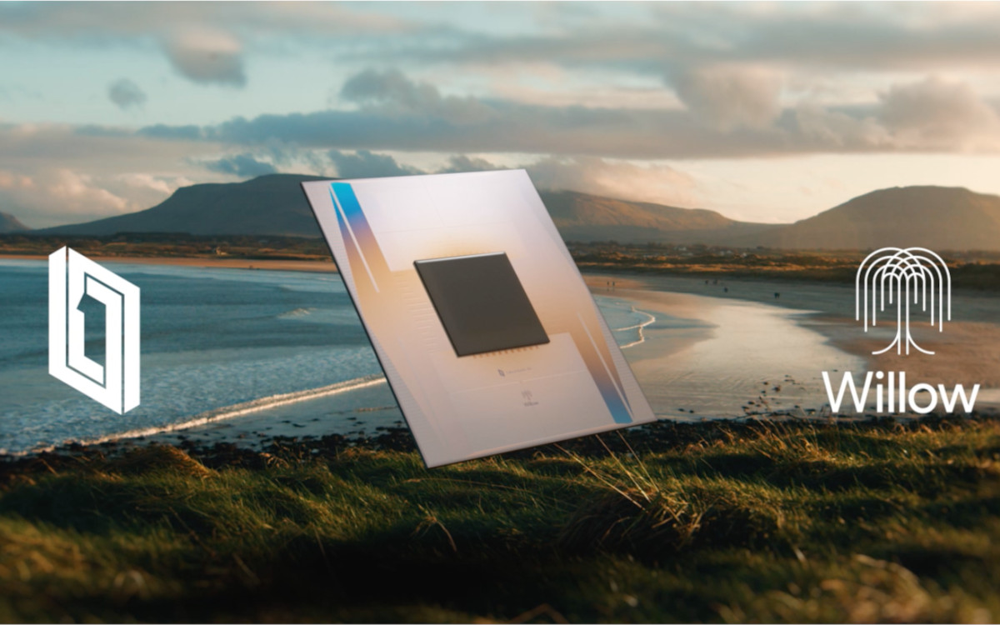

Google lance Willow, sa nouvelle puce quantique de 105 qubits
Date de publication : 11 décembre 2024
Auteur : Loïc Duval
En décembre 2024, Google a fait une annonce majeure en dévoilant "Willow", un processeur quantique comprenant 105 qubits. Ce processeur succède à "Sycamore", qui avait marqué un tournant en 2019 en revendiquant la "suprématie quantique". Avec Willow, Google repousse les limites de l'informatique quantique, visant des applications pratiques dans des domaines variés tels que la chimie moléculaire et l'optimisation logistique.
Cette nouvelle puce est conçue pour améliorer la stabilité des qubits et réduire les taux d'erreur, ce qui constitue l'un des plus grands défis dans le domaine. Google affirme que cette avancée pourrait transformer des industries entières en proposant des solutions inaccessibles aux ordinateurs classiques.
Ce projet s'inscrit dans une compétition mondiale féroce, où des entreprises comme IBM, Quandela ou encore des start-ups asiatiques rivalisent pour dominer le marché des technologies quantiques.